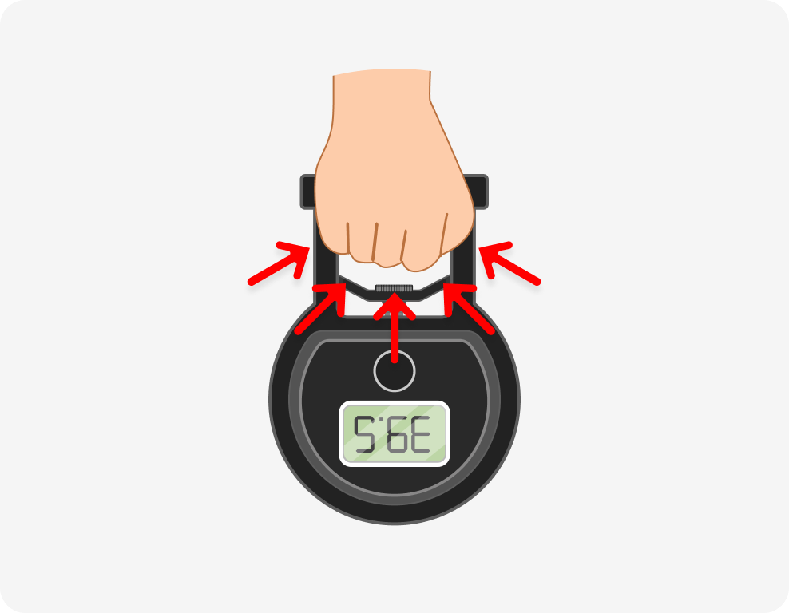

-
1.악력계 켜기
악력계 전원 버튼 누르기
-
2.측정 준비
다리를 어깨 너비로 벌리고
똑바로 선 뒤, 양팔을 쭉 펴고 몸에서 살짝
뗀 뒤 악력계의 손잡이를 잡습니다 -
3.측정
 악력계의 손잡이를 최대한
당겼다가 놓아 악력을 측정합니다
악력계 전원 버튼 누르기
다리를 어깨 너비로 벌리고
똑바로 선 뒤, 양팔을 쭉 펴고 몸에서 살짝
뗀 뒤 악력계의 손잡이를 잡습니다
악력계의 손잡이를 최대한
당겼다가 놓아 악력을 측정합니다